Shooting the Pictures
Stitching two photos together seems like it would be simple. Take two pictures, slide one over until they match up. This however, does not work. When you turn the camera, the second photo is not just shifted, it is seen from a different angle, and lines tilt. To line them up we need a homography, and a homography only works if both photos share the same center of projection. For each pair of photos, I stood in one spot, and rotated the camera between shots. I was fortunate to have been already in the habit of doing this, so I did not need to shoot new pictures for this project.
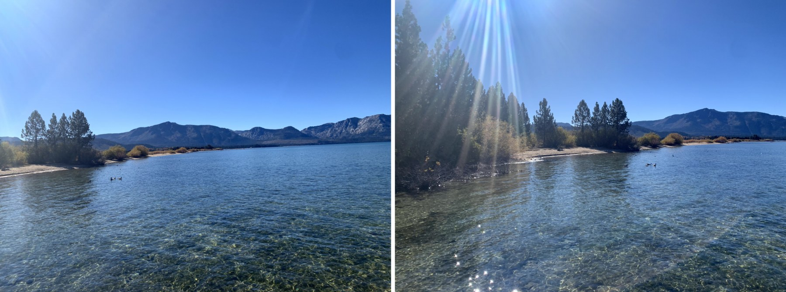
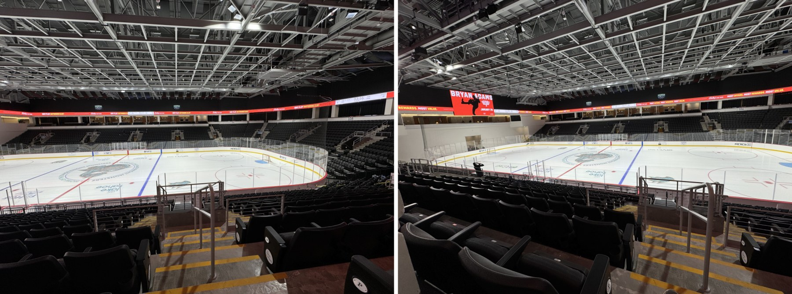
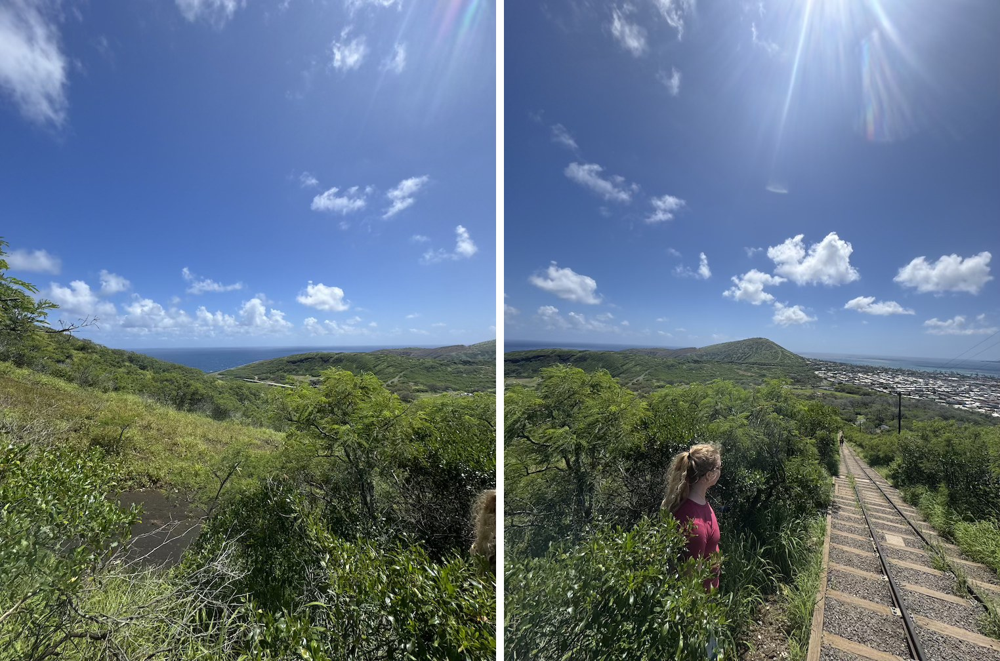
Recovering Homographies
A homography is a 3x3 matrix H that takes a point (x, y) in one photo to (x', y') in the other: [wx', wy', w] = H [x, y, 1]. The extra w is what lets it handle perspective, and to get the actual point back we divide by it. We can fix the bottom right entry of H to 1, which leaves 8 unknowns. Each pair of matching points gives us 2 equations, so 4 points is enough to solve for H exactly. My clicks are not perfect though, so I clicked 6 to 8 points per pair and solved with least squares, which averages out the small errors.
2.1 The System of Equations
If we write out the division by w and move everything to one side, each pair of points (x, y) → (x', y') gives two rows of a linear system A h = b. Here h is the 8 unknown entries of H, read row by row:
⎡ x y 1 0 0 0 −x′x −x′y ⎤ ⎡ x′ ⎤ ⎣ 0 0 0 x y 1 −y′x −y′y ⎦ · h = ⎣ y′ ⎦
def computeH(im1_pts, im2_pts):
im1_pts = np.asarray(im1_pts, dtype=float)
im2_pts = np.asarray(im2_pts, dtype=float)
rows = []
b = im2_pts.flatten()
for (x, y), (x_, y_) in zip(im1_pts, im2_pts):
rows.append([x, y, 1, 0 ,0 ,0, -x_*x, -x_*y])
rows.append([0, 0, 0, x ,y ,1, -y_*x, -y_*y])
A = np.array(rows)
h = np.linalg.lstsq(A, b)[0]
H = np.append(h, 1).reshape(3, 3)
return H2.2 Correspondences
Matching numbers are the same point in both photos. I tried to pick sharp corners that are far away from the camera, like tree tops, mountain ridges, rink markings, and ceiling trusses.
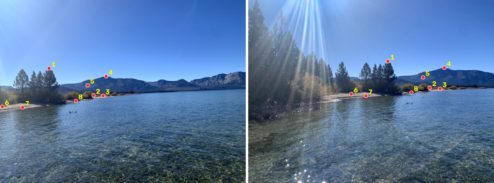
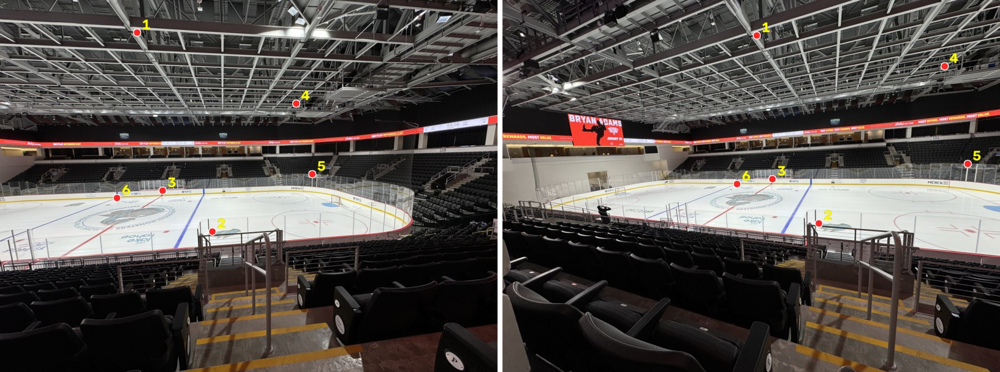
2.3 Recovered Homography
Here is the H I recovered for the beach, in full resolution pixel coordinates. It goes from the left photo into the right photo, which is the direction the inverse warp needs.
H = ⎡ 2.123 0.036 −3590.676 ⎤
⎢ 0.379 1.732 −786.079 ⎥
⎣ 0.00028 −0.000017 1.000 ⎦
Warping the Images
The obvious way to warp an image is to take every pixel in the source and send it to its new spot. The problem is that when the image stretches, neighboring pixels land further apart, and you get holes. Inverse warping flips it around. For every pixel in the output, we ask where it came from in the source, send it back through H, and grab the color there. Every output pixel gets a value, so there are no holes. The catch is that the spot we land on is almost never a whole pixel, and the two warps differ only in how they handle that.
3.1 Sizing the Canvas
My first version made the output the same size as the input. This cut off anything that warped to negative coordinates, which in a mosaic is usually half the picture. To fix this, I send the source's 4 corners forward through the inverse of H (dividing by w) and take the box around them. That box is the canvas. Its top left corner is not at (0, 0) anymore, so I add that offset to every canvas pixel before sending it through H.
coords = np.meshgrid(np.arange(bottom_right[0]), np.arange(bottom_right[1]))
xs, ys = coords
points = np.stack([xs.ravel() + top_left[0], ys.ravel() + top_left[1], np.ones(xs.size)])
source = H @ points
source_x = source[0] / source[2]
source_y = source[1] / source[2]
x0 = np.floor(source_x).astype(int)
y0 = np.floor(source_y).astype(int)
mask = (x0 >= 0) & (x0 + 1 < w) & (y0 >= 0) & (y0 + 1 < h) & (source[2] > 0)
...
dx, dy = (safe_x - x0)[:, None], (safe_y - y0)[:, None]
canvas[cy, cx] = ((1-dx)*(1-dy)*im[y0, x0] + dx*(1-dy)*im[y0, x0+1]
+ (1-dx)*dy*im[y0+1, x0] + dx*dy*im[y0+1, x0+1])Nearest neighbor is the same function, except it rounds the source coordinates to the closest pixel and copies it. Bilinear takes the 4 pixels around the spot and averages them, weighted by how close each one is. Both work on any number of channels, so if I stack an alpha channel on as a 4th channel, it gets warped right along with the colors. This ends up being important for the blending in Section 4.
3.2 Rectification
A good way to test the warps is rectification. If I know something is a rectangle in real life, I can click its 4 corners and send them to the corners of an actual rectangle. If the warp works, the object should look like it is viewed straight on. I did this with the dock at Kiva Beach (sent to a long thin strip), and the video board at Tahoe Blue (sent to 16:9).
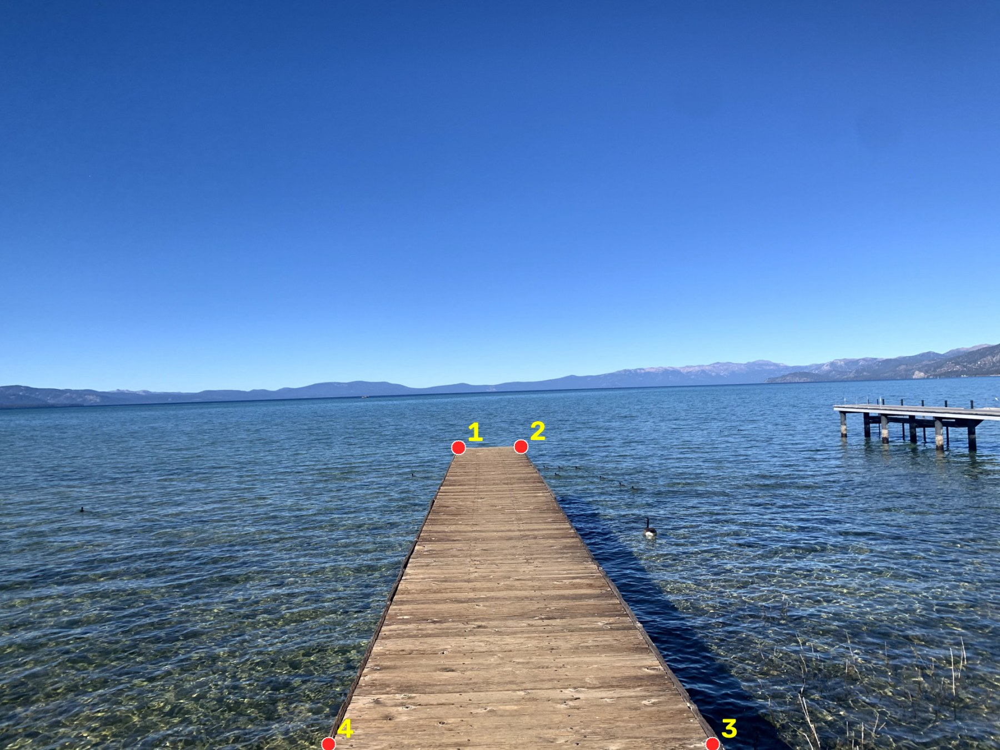
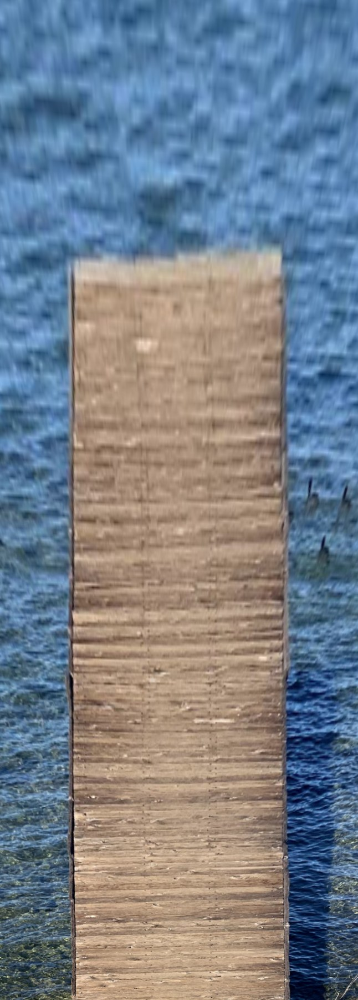
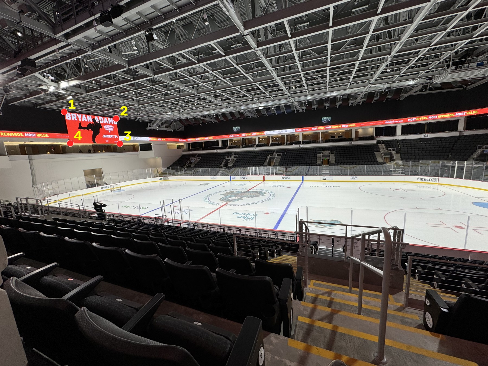
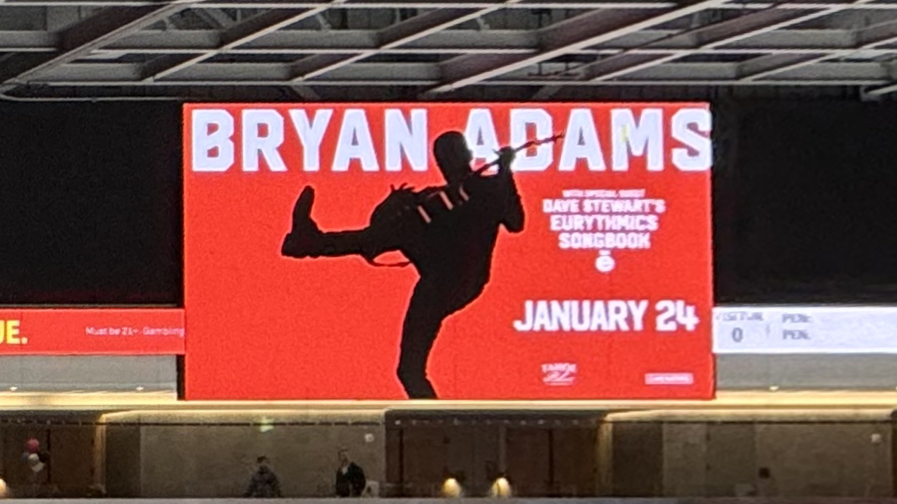
3.3 Nearest Neighbor vs Bilinear
The video board gets blown up about 3x during rectification, which makes the difference easy to see. Nearest neighbor is on the left, bilinear on the right.
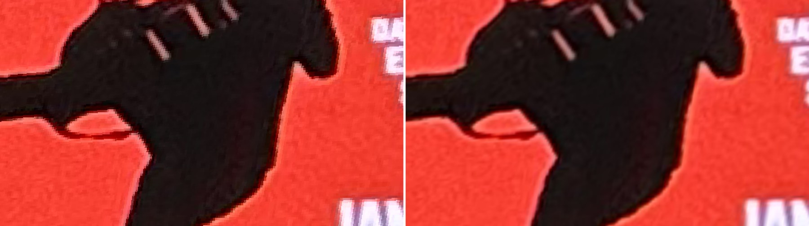
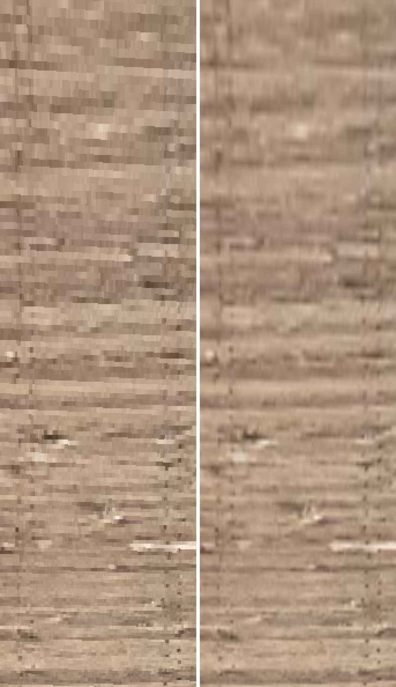
| Warp | Dock (680 × 2380) | Video board (2176 × 1224) |
|---|---|---|
| Nearest neighbor | 0.07 s | 0.09 s |
| Bilinear | 0.15 s | 0.30 s |
Nearest neighbor gives jagged, staircase edges on the silhouette, since several output pixels in a row all copy the same source pixel. Bilinear blends them, so the edges stay smooth, but it is a little softer. It is also 2 to 3 times slower, since it reads 4 pixels and computes weights instead of reading 1. Both are fast enough to not matter here, so I used bilinear for everything else.
Blending into a Mosaic
For each pair, one photo stays fixed as the reference, and the other gets warped into its frame. My procedure:
- Size the canvas. Take the box around both the warped photo and the reference photo, so nothing gets cut off.
- Add an alpha channel. Each photo gets a weight that is 1 at its center and falls off to 0 at its edges.
- Warp the photo onto the canvas with its alpha along for the ride, and paste the reference photo onto a canvas of the same size.
- Take the weighted average at every pixel:
(a1*rgb1 + a2*rgb2) / (a1 + a2).
def feather_alpha(h, w):
x = np.arange(w)
y = np.arange(h)
dx = np.minimum(x, w - 1 - x) / ((w - 1) / 2)
dy = np.minimum(y, h - 1 - y) / ((h - 1) / 2)
return np.maximum(dy[:, None] * dx[None, :], 1e-3)The weight at each pixel is its distance to the nearest left or right edge, times its distance to the nearest top or bottom edge, both scaled to go from 0 to 1. The small floor at the end keeps the very edge of each photo from going black. My first attempt just laid one photo over the other at 50%. Everywhere only one photo covers, it got averaged with the black background, so those parts came out half as bright. Dividing by a1 + a2 fixes this, since a photo by itself just gets divided by its own weight.
4.1 Kiva Beach, South Lake Tahoe
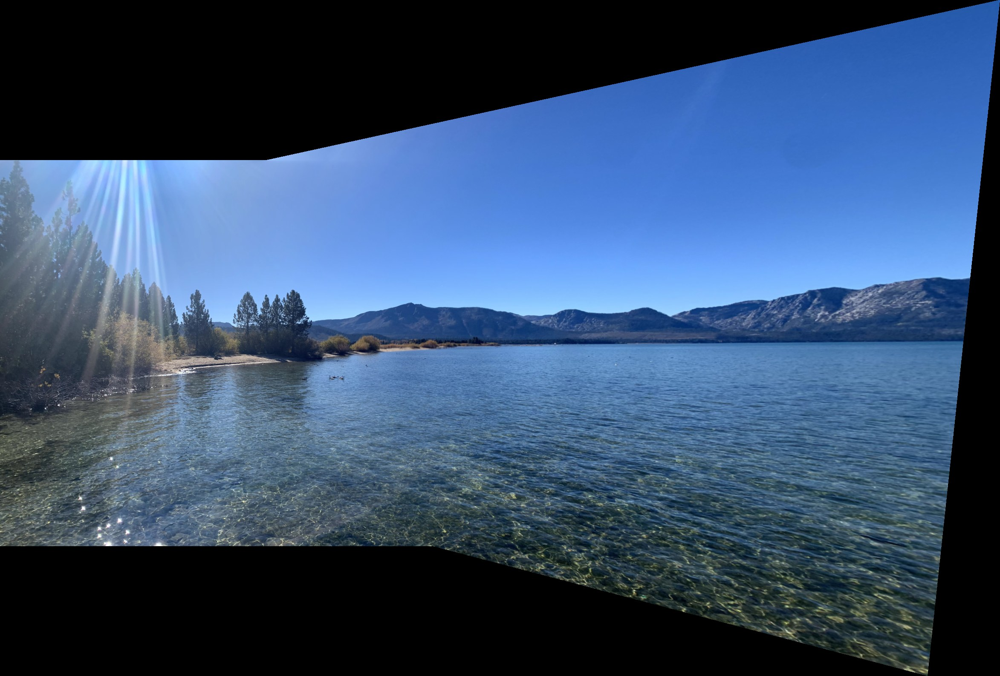
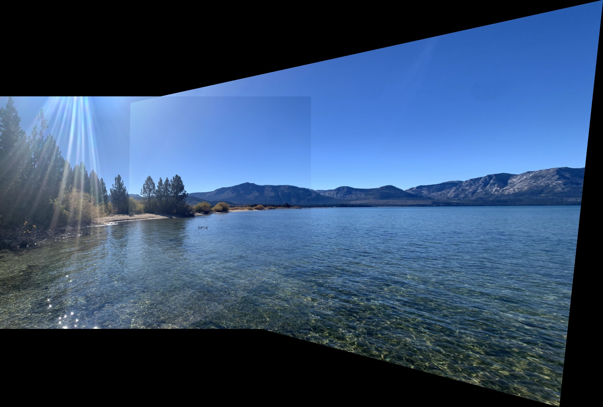
4.2 Tahoe Blue Event Center
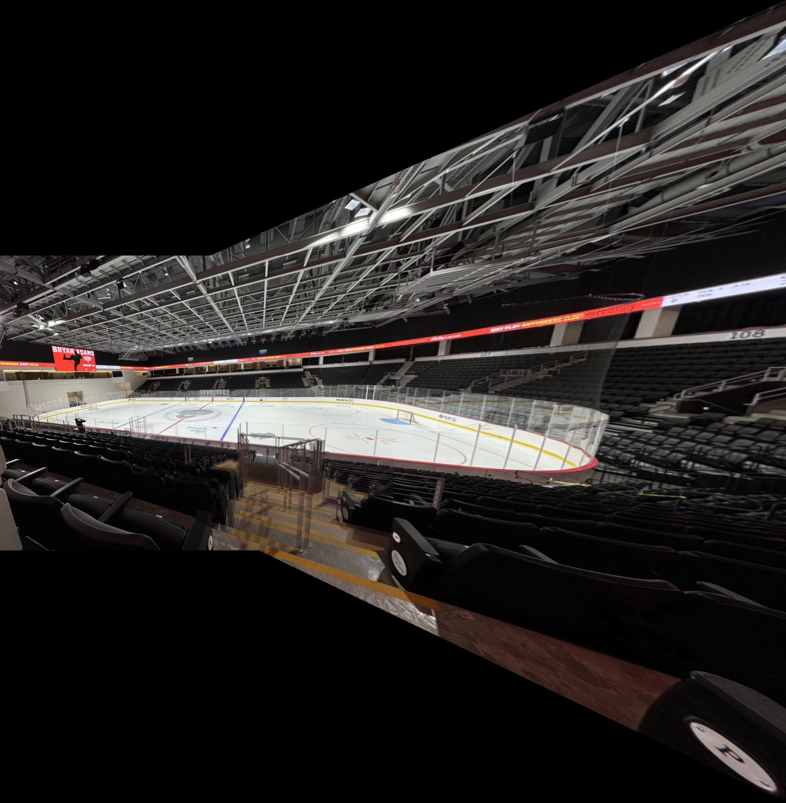
4.3 Koko Head, Hawaii
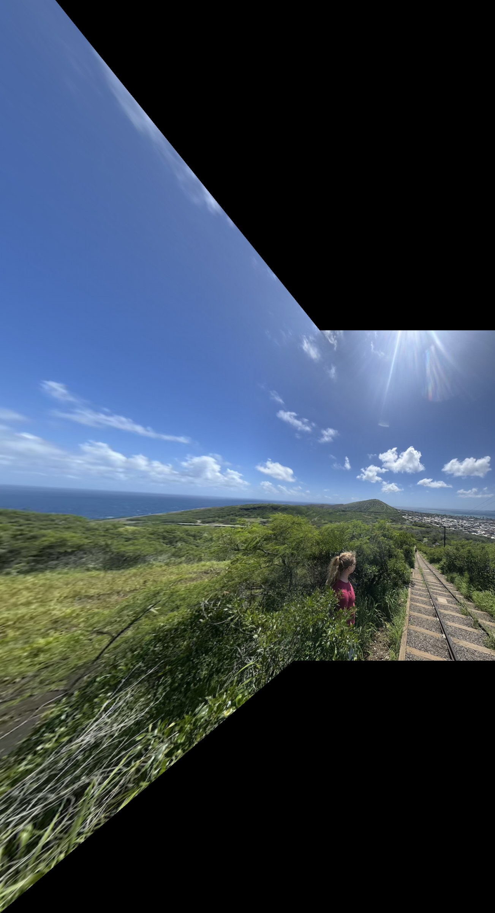
Finding Corners
Clicking correspondences by hand was the slowest part of Part A, and it was easy to get wrong. In Part B the computer finds them, following the MOPS paper (Brown, Szeliski and Winder). The first step is finding points that will be easy to find again in the other photo. Corners are good for this, since they move in a way you can see whichever direction you shift them, while a flat patch of sky or a straight edge does not.
1.1 Harris Corners
I used the provided Harris detector, single scale. Every pixel gets a corner strength, and every local maximum of that strength counts as a corner. Before anything else I shrink the photos to a quarter size. At full resolution a single photo gave almost 300,000 corners. A quarter of the size, plus throwing out any corner weaker than 1% of the strongest, brings that down to a few thousand. The detector also drops anything within 20 pixels of the edge, since the descriptors in Section 2 need a 40x40 window around each corner.
1.2 Adaptive Non-Maximal Suppression
Thousands of corners is still too many to match, but just keeping the strongest 500 bunches them up in the busiest parts of the image. ANMS spreads them out. For every corner I find the distance to the nearest corner that is clearly stronger than it (by at least about 10%, so f_i < 0.9 f_j). That distance is its suppression radius. A corner with a big radius is the best thing in a big area, so I keep the 500 with the biggest radii. The strongest corner overall has nothing stronger, so its radius is infinite and it always makes it.
def anms(h, coords, n=500, threshold=0.9):
strength = h[coords[0], coords[1]]
num_corners = coords.shape[1]
r = np.empty(num_corners)
for i in range(num_corners):
corner = coords.T[i:i+1, :]
distances_from = dist2(corner, coords.T)
validity = strength*threshold > strength[i]
valid_distances = distances_from[:, validity]
r[i] = np.min(valid_distances, initial=np.inf)
indices = np.argsort(r)[::-1][:n]
return coords[:, indices]I loop over the corners one at a time, and only compute one row of distances per corner. Doing the whole N x N distance matrix at once was too much memory at first. With all the full resolution corners, it would have been over 600 GB.
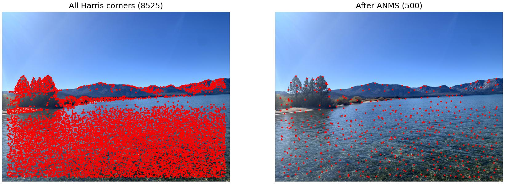
Feature Descriptors
To match a corner, we need a description of what the area around it looks like. For each corner I take the 40x40 window around it and sample every 5th pixel, which gives an 8x8 patch. Harris corners are usually off by a pixel or two, and a coarse sample of a big area barely changes when you shift it a little. Taking every 5th pixel straight away would alias, so I blur the image first with a Gaussian (σ = 2, the standard anti-aliasing σ for downsampling by 5). Then each patch is normalized to mean 0 and standard deviation 1. A brighter or higher contrast copy of the same patch then comes out to the exact same 64 numbers, which matters because my two shots never have exactly the same exposure.
def feature_descriptor(corners, im):
blurred = cv.GaussianBlur(im, (0, 0), sigmaX=2)
num_corners = corners.shape[1]
results = np.zeros((num_corners, 64))
i = 0
for y, x in corners.T:
samples = blurred[y-20:y+20:5, x-20:x+20:5]
patch = samples.flatten()
patch = (patch - np.mean(patch)) / (np.std(patch) + 1e-8)
results[i] = patch
i += 1
return results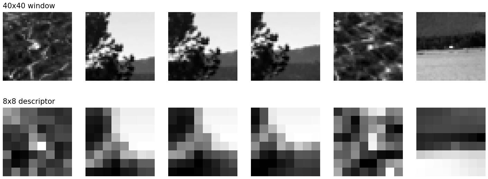
Feature Matching
Each descriptor is a point in 64 dimensions, so the best match for a feature in one photo is the closest descriptor in the other photo. The problem is that the closest match is not always right. On the water, every ripple looks like every other ripple, so a feature can have a very close match that is wrong. The paper shows that the distance to the best match is not a good test on its own (Figure 6a), but comparing it to the second best match is (Figure 6b). The second best match is almost always wrong, so it tells us how close a wrong match gets for this feature. If the best match is a lot better than that, it is probably right. If they are about the same, the feature is ambiguous, and I throw it out.
I keep a match when the ratio of squared distances 1-NN / 2-NN is under 0.7. In Figure 6b, the correct matches are mostly well under that and the incorrect matches mostly sit above it.
def match_features(features1, features2, threshold=0.7):
distances = dist2(features1, features2)
best = []
for i in range(features1.shape[0]):
row = distances[i]
indices = np.argsort(row)
nn1, nn2 = indices[0], indices[1]
if row[nn1]/row[nn2] < threshold:
best.append((i, nn1))
return best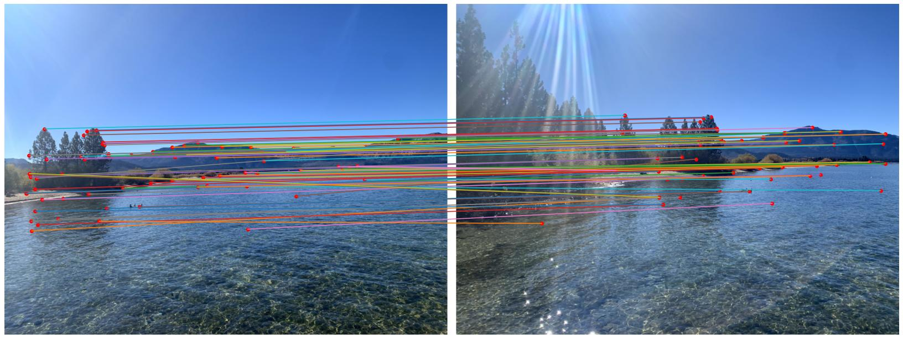
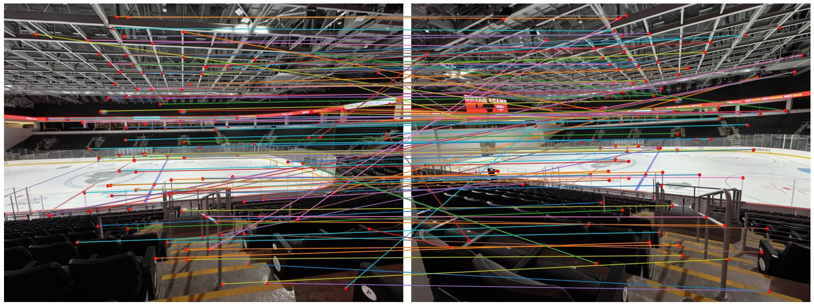
RANSAC and Automatic Mosaics
The ratio test removes most of the wrong matches, but not all of them, and my computeH from Part A uses least squares, which trusts every point the same. One bad match pulls H off, and a few ruin it. RANSAC finds the largest group of matches that all agree on one homography:
- Pick 4 matches at random and compute the exact H for them.
- Send every point through H (dividing by w) and see how far each one lands from its match. The ones within 2 pixels are inliers.
- Keep the H with the most inliers over 1000 tries.
- Refit with least squares on just those inliers.
If any of the 4 random matches is wrong, the H it gives is junk and almost nothing agrees with it. When all 4 happen to be right, every other correct match agrees with it too. It only needs to get lucky once in 1000 tries. The inliers are found on the quarter size photos, so I multiply them by 4 and pass them to my Part A create_mosaic, exactly the way I passed it my clicked points.
def ransac(pts1, pts2, num_iters=1000, eps=2):
num_matches = pts1.shape[0]
pts1_h = np.hstack([pts1, np.ones((num_matches, 1))])
best_inliers = np.zeros(num_matches, dtype=bool)
for _ in range(num_iters):
sample = np.random.choice(num_matches, 4, replace=False)
H = computeH(pts1[sample], pts2[sample])
projected = H @ pts1_h.T
projected = (projected[:2] / projected[2]).T
errors = np.linalg.norm(projected - pts2, axis=1)
inliers = errors < eps
if inliers.sum() > best_inliers.sum():
best_inliers = inliers
return pts1[best_inliers], pts2[best_inliers]4.1 Kiva Beach, South Lake Tahoe
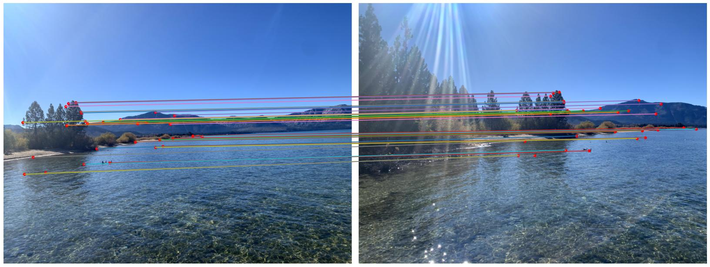
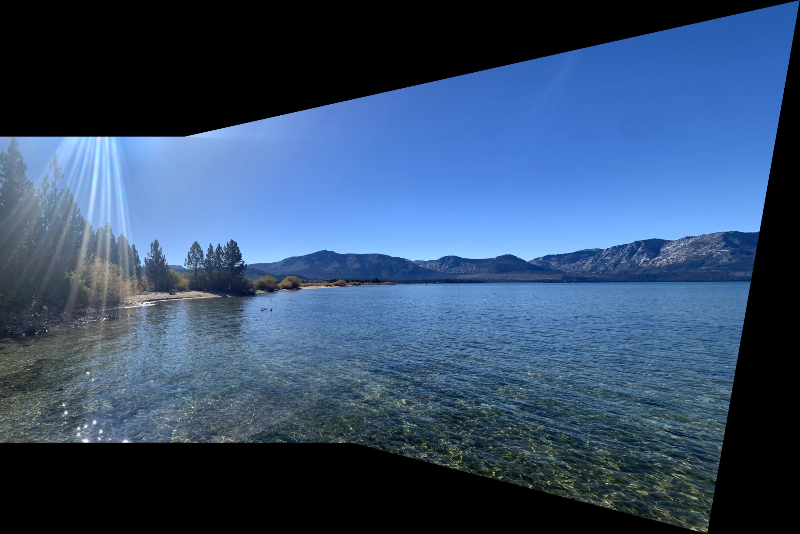
4.2 Tahoe Blue Event Center
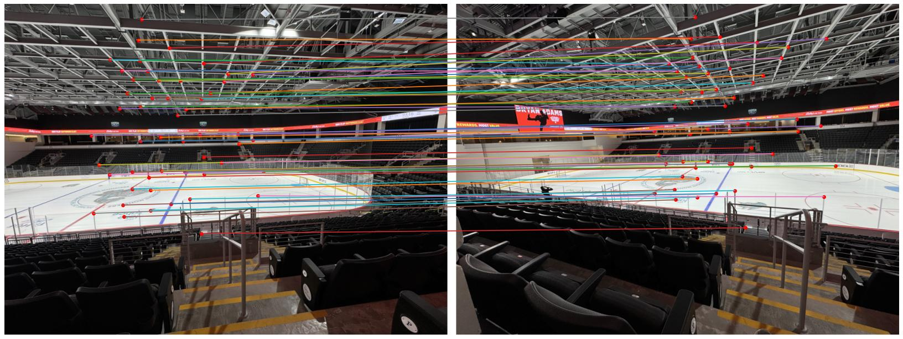
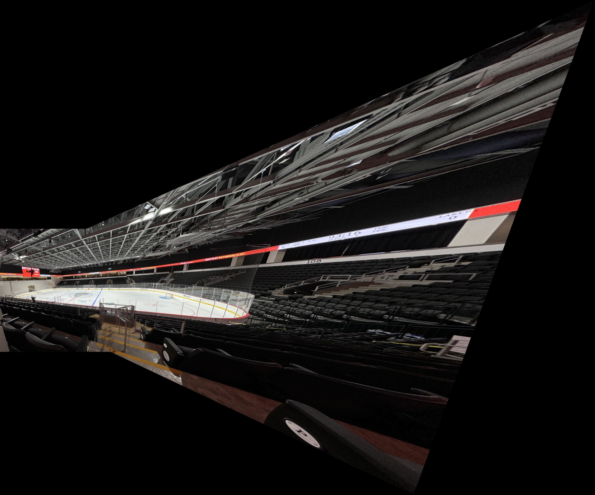
4.3 Costa Rica
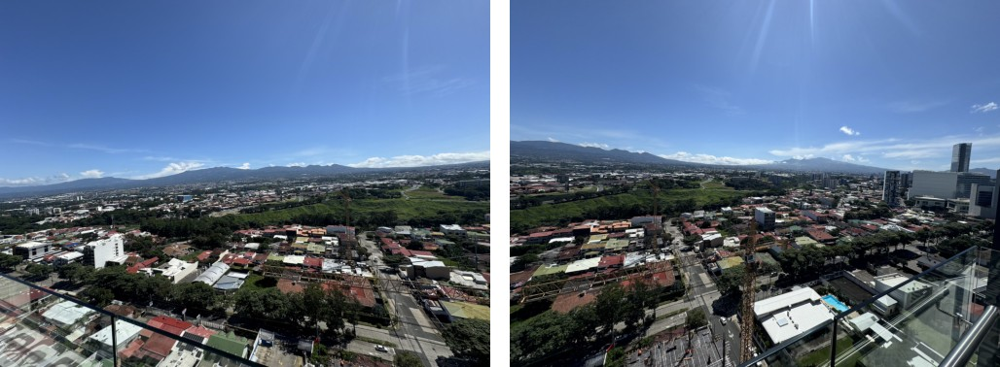
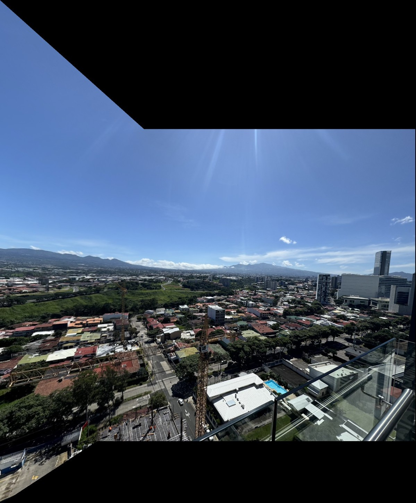
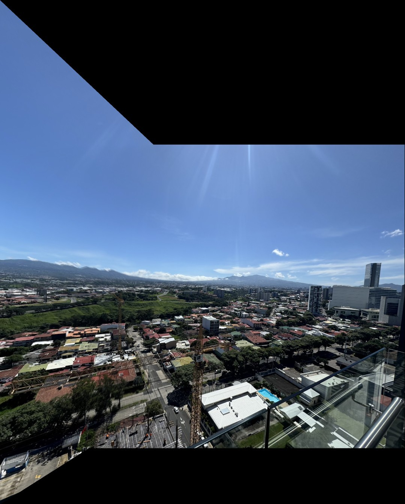
4.4 Where It Failed: Koko Head
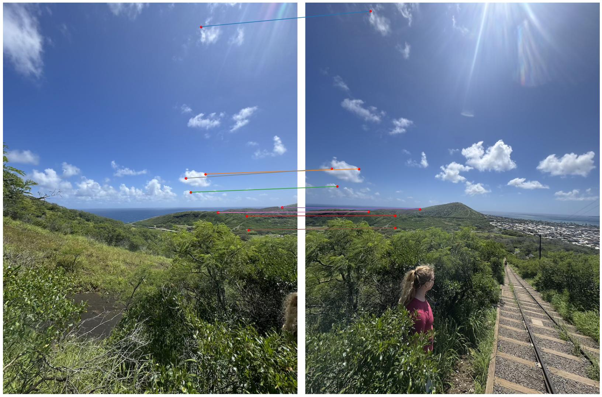